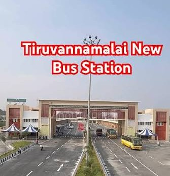
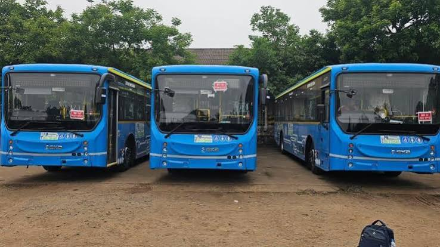
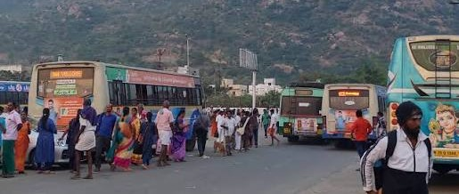
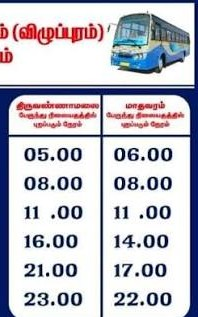

Name : Tiruvannamalai New Bus Stand
Location : Tiruvannamalai, Tamil Nadu
Timings : Open 24 Hours
The Tiruvannamalai New Bus Stand is the primary transportation hub connecting pilgrims and tourists to major cities across Tamil Nadu, Karnataka and Andhra Pradesh.
🎫 Ticket Counter Available
🚖 Auto Stand Available
🚕 Taxi Stand Available
🚌 Government & Private Buses
🛡️ Police Assistance Available
🏥 First Aid Facility
📢 Passenger Announcement System




| Destination | Bus Type | Approx Travel Time |
|---|---|---|
| Chennai (CMBT) | TNSTC / SETC | 4.5 – 5.5 Hours |
| Bengaluru | KSRTC / TNSTC | 5 – 6 Hours |
| Vellore | TNSTC | 2 – 2.5 Hours |
| Salem | TNSTC | 3 – 4 Hours |
| Villupuram | TNSTC | 1.5 – 2 Hours |
| Tirupati | APSRTC / TNSTC | 4 – 5 Hours |
| Puducherry | TNSTC | 3 – 4 Hours |
| Kanchipuram | TNSTC | 3 – 4 Hours |
| Krishnagiri | TNSTC | 4 – 5 Hours |
| Coimbatore | SETC | 7 – 8 Hours |
| Madurai | SETC | 6 – 7 Hours |
| Trichy | SETC | 5 – 6 Hours |
| Erode | TNSTC | 5 – 6 Hours |
| Hosur | KSRTC / TNSTC | 5 – 6 Hours |
🧳 Tourist Information
📞 04175-253020
📱 8939896396
🚓 Police Assistance
📞 100
🚑 Medical Emergency
📞 108
🔥 Fire & Rescue
📞 101
👶 Child Helpline
📞 1098
Travel Smart • Travel Safe • Happy Journey